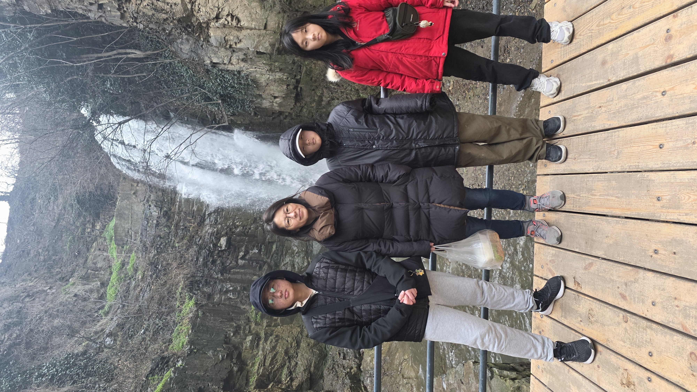
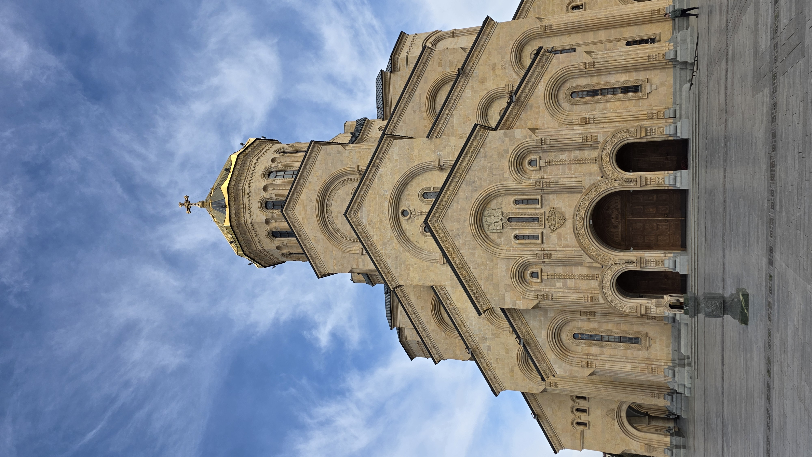
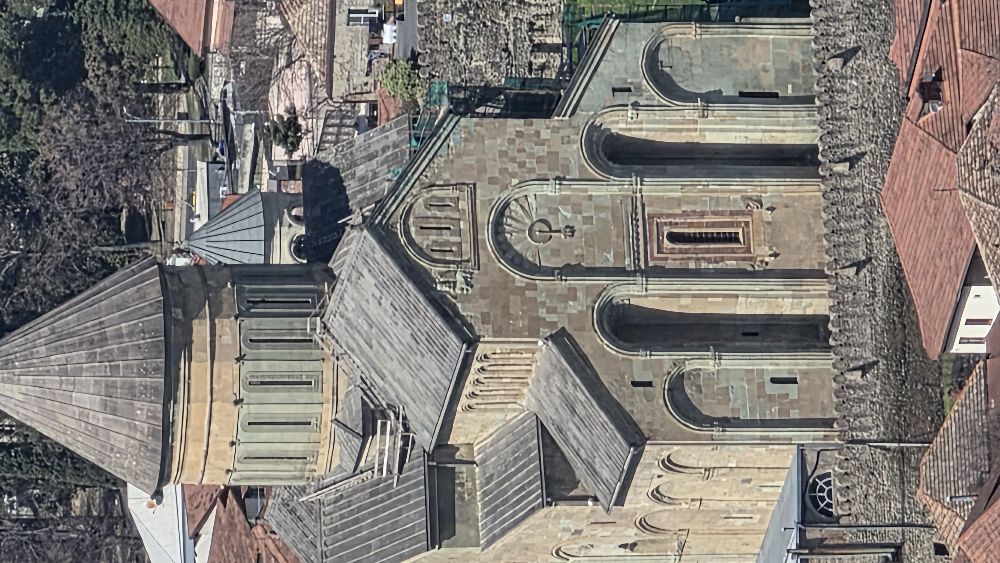
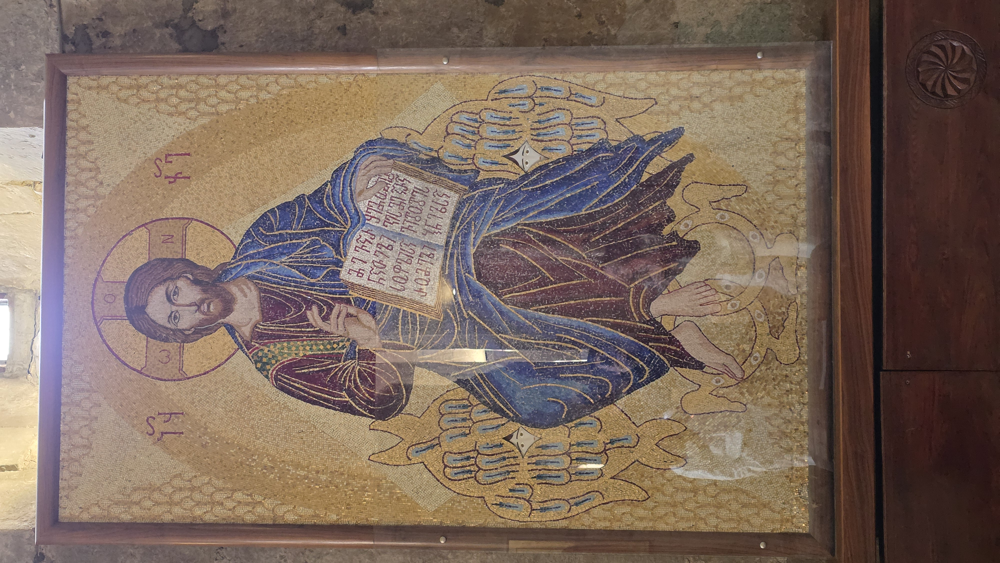

동역자 여러분, 주님의 이름으로 문안드립니다.
조지아 트빌리시에서 새로운 선교의 길을 개척하며, 하나님의 인도하심을 구하는 마음으로 간절한 기도의 소식을 전합니다.
가족 소식: 감사와 새로운 발걸음
지난 6월 10일, 저희 부부는 하나님의 신실하신 은혜 가운데 결혼 20주년을 맞이했습니다. 지나온 모진 삶의 고비와 세월 동안 저희 가정을 지키시고 은총으로 인도하신 주님께 진심으로 깊은 감사를 드립니다.
큰 딸 한나는 미국에서 무사히 고등학교를 졸업하였습니다. 이후 일본에 위치한 대학 두 곳에 지원하여 한 곳에 합격했으나, 진지한 기도와 고민 끝에 본인이 진정으로 더 원하는 진로를 찾아 나아가기 위해 감사한 합격을 잠시 내려놓았습니다. 현재 내년 초 입학을 목표로 삼고 한국에서 굳건히 학업에 매진하고 있습니다. 한나의 앞길에 하나님께서 미리 예비하신 선한 인도하심이 있도록 기도를 부탁드립니다.
둘째 요한이와 셋째 시아, 넷째 수아는 다가오는 가을 학기부터 트빌리시 현지에 위치한 선교사 자녀(MK)를 위한 대안학교에 입학하기로 결정했습니다. 아이들이 낯선 새로운 환경에서도 흔들리지 않는 신앙과 학업을 조화롭게 이어가기를 바라지만, 세 명의 학비를 동시에 감당해내야 하는 형편이기에 재정적인 채워짐이 무척이나 간절한 상황입니다.
대사관 주최 미술 대회에서 하나님 손 위에 독도를 올려둔 신앙 고백적 그림을 그려 최우수상을 수상한 딸 박시아의 영상입니다.




BAM(비즈니스 선교)의 현주소: 닫힌 문 앞에서
조지아로 선교 사역지를 정식으로 옮기면서 비즈니스 선교(BAM)의 문을 열기 위해 열정적으로 준비했습니다. 튀르키예 사역지에서부터 소중히 챙겨온 떡볶이 기계와 선교 비즈니스 물품들을 고스란히 챙겨 입국했고, 이곳 현지에서 동역할 귀한 투자자 분과의 설레는 만남도 예정되어 있었습니다.
원래 계획대로라면 지금쯤 현장에서 비지땀을 흘리며 열성적으로 사업을 일구고 사역을 펼치고 있어야 할 시기이지만, 안타깝게도 만남이 성사되지 못해 고생스레 챙겨온 모든 물품들은 어두운 창고에 그대로 잠들어 있습니다. 인간적인 계획대로 흐르지 않는 답답함에 마음 한편 아쉬움과 막막함도 크지만, 이 강제적인 멈춤의 계절 속에서 저희는 하나님께서 진정 원하시는 새로운 영적 방향이 어디에 있는지 끊임없이 묻고 기도로 주님을 우러러보고 있습니다.
무엇보다 당장 다섯 식구의 삶을 지탱하는 생존이 가장 시급한 기도 제목입니다. 최근의 환율 악화 문제와 더불어 이곳 조지아의 물가가 예전과 비교할 수 없을 만큼 가파르게 상승하여, 하루하루 식솔을 건사하는 일조차 무척 빠듯한 고단한 현실을 마주하고 있습니다.
IT 기술을 통한 자비량의 길과 웹 개발 포트폴리오
이러한 현실적인 장벽 속에서, 저는 하나님께서 오랜 세월 저에게 주신 컴퓨터 프로그래밍과 웹 개발 기술을 도구 삼아 온라인으로 자비량의 길을 돌파하고자 필사적으로 분투하고 있습니다.
첫째로, 조지아는 물론 튀르키예, 러시아, 그리고 캅카스 3국 상황에 적합하도록 고안한 다국어 중고 거래 플랫폼인 '그린마켓'의 개발을 마치고 현재 최종 배포를 눈앞에 두고 있습니다. 또한 조지아의 차별화된 여행 플랫폼과 더불어, 현지 식당, 카페, 숙박업(호텔) 등 서비스 산업에서 실무적으로 요긴하게 사용할 수 있는 SaaS 형태의 비즈니스 오퍼레이션(POS) 플랫폼을 동시에 구축해 나가고 있습니다.
그린마켓 (Green Market)
조지아, 튀르키예, 러시아, 캅카스 3국을 하나로 잇는 현지 최적화 중고 거래 플랫폼 개발 및 런칭 대기 중.
비즈니스 오퍼레이션 POS
현지 영세 카페, 식당, 호텔 비즈니스의 운영 효율을 돕는 클라우드 기반 POS/오퍼레이션 플랫폼 구축.
향후 전문 웹 개발자로서 외주 프로젝트를 수주하고 선교 비즈니스를 유기적으로 확장해 나가기 위해 저의 실질적인 개발 역량을 명확히 입증할 수 있는 포트폴리오 사이트를 정밀하게 제작하여 공개합니다.
웹 개발 역량 포트폴리오 (프로토타입)
선교사의 IT 전문 기술 역량과 개발 이력을 시각적으로 입증하여 비즈니스 기반을 다지기 위한 포트폴리오 웹사이트입니다.
미래 선교 전략: AI를 통한 복음의 확장과 재능 기부
생계의 거친 풍파와 치열한 삶의 한복판에서도, 신기하게도 하나님께서는 저희 부부에게 'AI와 선교'라는 새로운 시대적 비전을 지속적으로 부어주고 계십니다. 최근 실크로드 포럼과 중동선교회 온라인 포럼에 기도로 참여하며, 다가오는 인공지능 시대에 선교 사역 현장에서 AI를 강력하고 효과적인 복음 전달 도구로 승화시켜야 한다는 시대적 사명을 뼈저리게 통감했습니다.
현재 한국 충현교회의 우수한 '방과 후 교실' 교육 모델에서 영감을 얻어, 조지아 현지의 동료 선교사님들과 마음을 모아 AI 기술을 함께 학습하고, 성경 교육 활동에 인공지능을 능동적으로 도입하는 창의적인 사역 모델을 설계하고 있습니다. 더 나아가 AI 에이전트를 활용한 초국가적 복음 제시와 적재적소의 선교사 매칭 시스템 역시 고안하고 있습니다.
그 작은 밀알과 같은 첫 단추로서, 조지아에 첫발을 디딘 선교사님들이 현지 언어를 가장 효율적으로 학습할 수 있도록 전액 재능 기부로 조지아어 언어 학습 프로그램을 개발해 무료 배포하고 있으며, 온라인을 통해 AI 선교 비전을 동역자들과 함께 나누고 있습니다.
조지아어 학습 프로그램
선교사님들의 빠른 현지 적응을 돕고자 재능 기부로 제작한 직관적이고 효과적인 조지아 언어 학습 도구입니다.
AI 선교 포럼 비전 사이트
포럼 발표 이후 차세대 인공지능(AI) 기술과 선교적 접목 비전을 연구하고 동역자들과 나누는 디지털 허브입니다.
기도를 부탁드립니다: 준비와 자립의 마중물
현재 모 선교단체와 함께 카페와 식당 비즈니스 선교(BAM) 사역을 진행할 수 있을 것으로 기대하고 있습니다. 만약 이 협력이 성사되어 사역을 전개하더라도, 아내가 중심이 되어 AI 선교를 진행하고 저 역시 곁에서 적극적으로 동역하고 도우면서 이 귀한 AI 선교 사역을 변함없이 지속해 나갈 계획입니다.
다만 가파르게 오르는 생활 물가와 아이들의 학비 등 피할 수 없는 현실적 압박 때문에, 사역이 궤도에 오르기 전까지 아내가 낮에는 선교단체 사역을 돕고 밤에는 생활비 조달을 위해 고된 밤샘 부업을 병행해야만 하는 열악한 위기에 직면해 있습니다.
저희 부부가 본 궤도에서 본격적인 비즈니스와 정밀한 외주 웹 개발을 수주하려면, 우선 우리의 기술을 대외적으로 입증할 포트폴리오를 빈틈없이 완성해야 합니다. 이를 위해 앞으로 딱 3개월의 몰입할 수 있는 집중 준비 기간이 저희 부부에게 간절히 필요한 실정입니다. 아내와 제가 고된 노역의 걱정을 내려놓고 3개월 동안 기술적 기초와 포트폴리오 사이트를 축적할 수 있도록, 핵심적인 AI 유료 도구 구독료 후원을 진심으로 눈물로 호소합니다.
이 3개월의 눈물 어린 인내의 준비 시간이 저희 부부에게는 타인의 후원에 영구히 의존하지 않는 건강한 자비량 선교사로 온전히 일어설 수 있는 소중한 마중물이자, 미래 선교 인프라를 다지는 결정적 골든타임이 될 것입니다.
자력으로 일어서서 선교의 새 지평을 열고자 하는 이 시대적 비전에 깊이 공감해 주시고, 3개월간 이 고독한 터널을 믿음으로 통과할 수 있도록 물질과 기도로 힘을 보태주실 소중한 동역의 손길들을 간절히 소망하고 기다립니다.
기도 제목 요약
- 1 큰 딸 한나가 한국에서 치르는 학업의 여정과 다가올 대학교 진학 과정에 주님의 세밀한 보살핌과 지도가 늘 동행하도록.
- 2 둘째 요한, 셋째 시아, 막내 수아가 조지아 현지 MK 대안학교 환경에 속히 적응하고, 세 명의 만만찮은 학비가 하나님의 기적 같은 손길로 때를 따라 채워지도록.
- 3 창고 속에 고이 멈추어 서 있는 떡볶이 비즈니스(BAM)의 문이 약속의 때에 환히 열리거나, 혹은 우리가 보지 못하는 더욱 선한 주님의 길로 가정이 인도받도록.
- 4 조지아, 튀르키예, 러시아, 캅카스 지역을 연결할 중고 플랫폼 '그린마켓'과 개발 중인 IT 플랫폼들이 자립과 복음 전파를 견인하는 튼튼한 기술적 기반이 되도록.
- 5 부부가 한마음으로 비즈니스 선교를 채비하는 긴 여정 중에 영육의 강건함을 잃지 않도록 동행해 주시며, 특히 3개월 동안 필요한 최소한의 AI 개발 도구 구독료(월 370불)가 원활히 공급되어 자립 준비에 온전히 집중할 수 있도록.
사역 및 재정 후원 안내
동역자 여러분께서 정성껏 보내주신 소중한 후원금은 선교지에서의 기술 자립 포트폴리오 준비, AI 선교 플랫폼 구축, 자녀들의 교육비와 필수 생활 비용으로 소중하고 투명하게 사용됩니다.